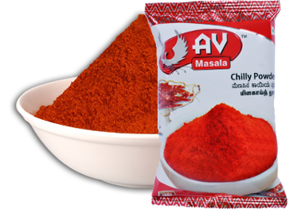
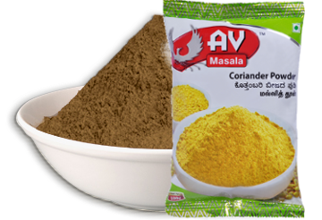
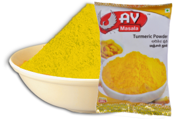
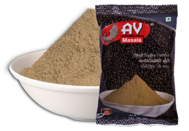

Our Products
Spices

Chilly
The Chilly Powder from offered by us, is widely demanded due to its freshness and purity among...
Coriander seeds when crushed have a lemony citrus flavor and are nutty, spicy and orange flavored..
A garden-fresh turmeric powder that has a golden-yellow colour. Known for its high carcumin..
Pepper is the dried fruit of Piper nigrum L. Native of Malabar coast of South Western India..
The Chilly Powder from offered by us, is widely demanded due to its freshness and purity among...
>>read more Coriander( Rajasthan)
Coriander seeds when crushed have a lemony citrus flavor and are nutty, spicy and orange flavored..
>>read more Turmeric
A garden-fresh turmeric powder that has a golden-yellow colour. Known for its high carcumin..
>>read more Pepper (Kerala)
Pepper is the dried fruit of Piper nigrum L. Native of Malabar coast of South Western India..
>>read more